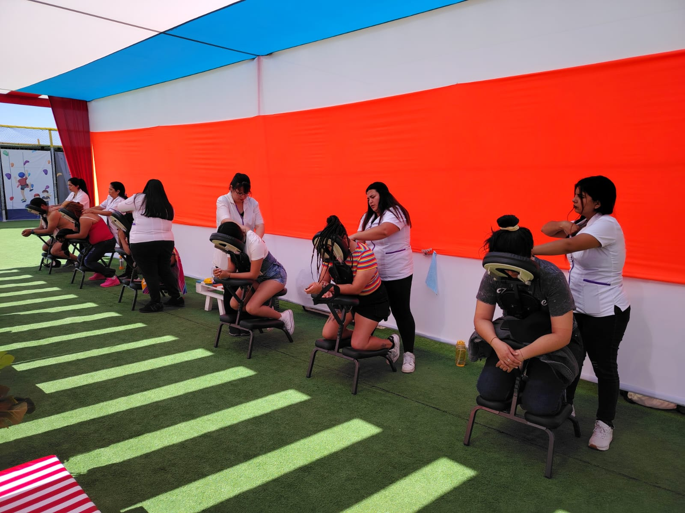
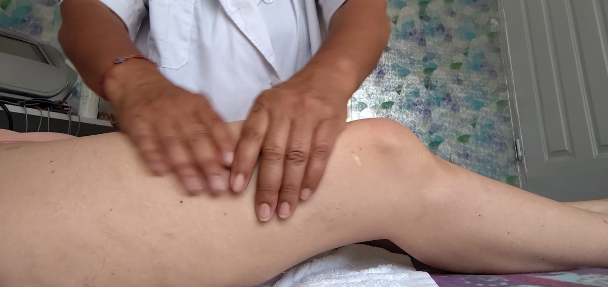
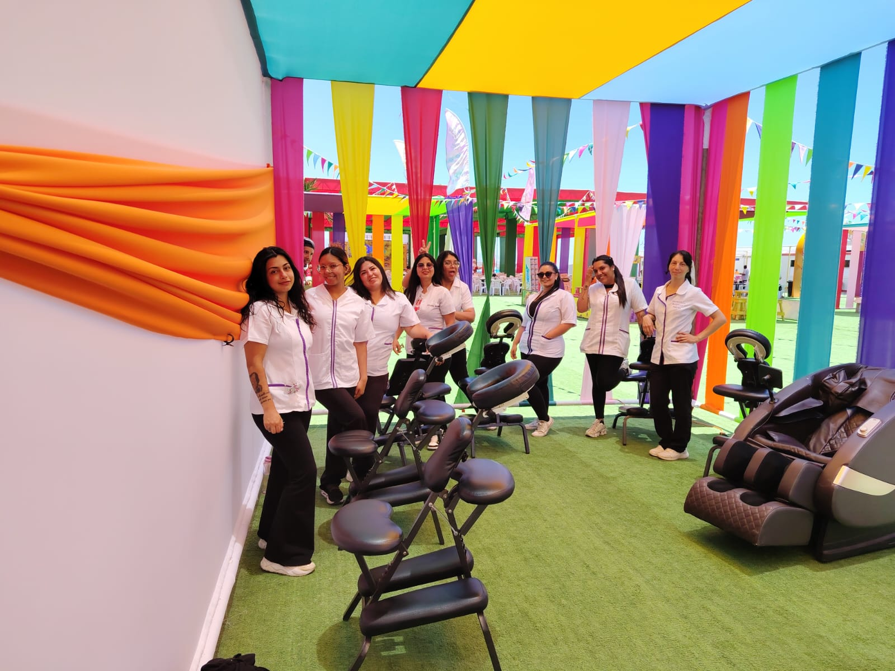
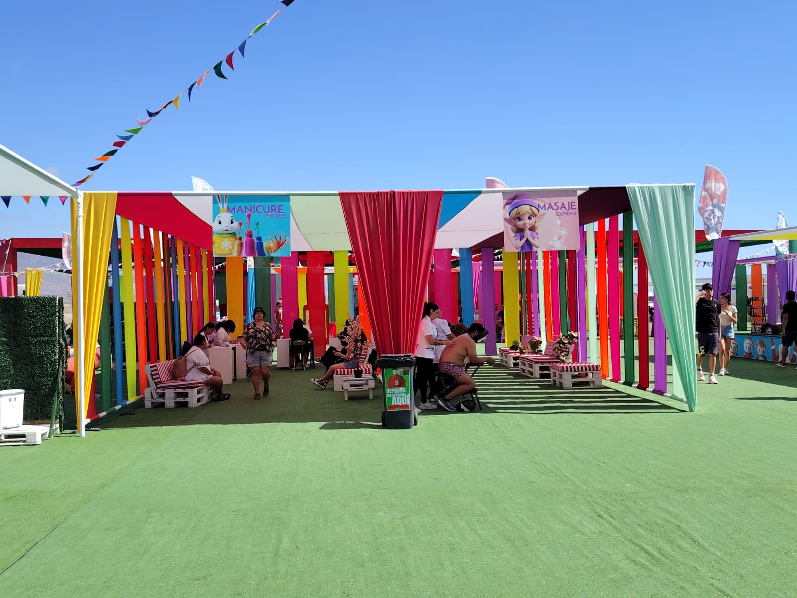
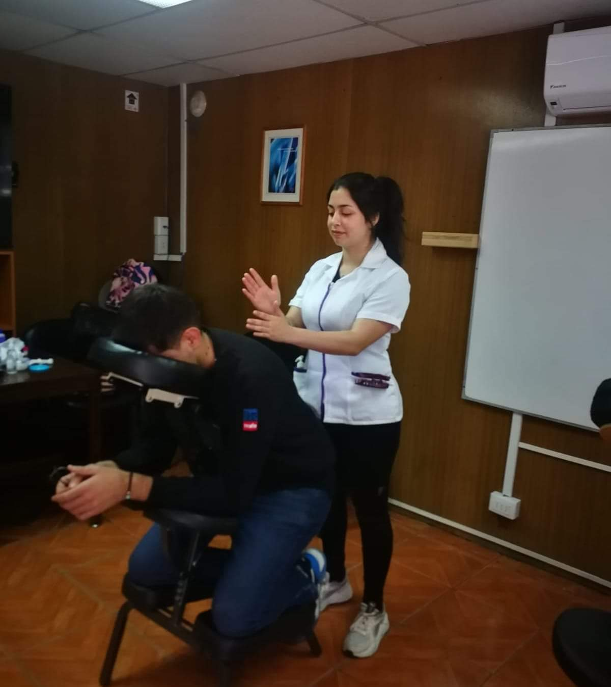
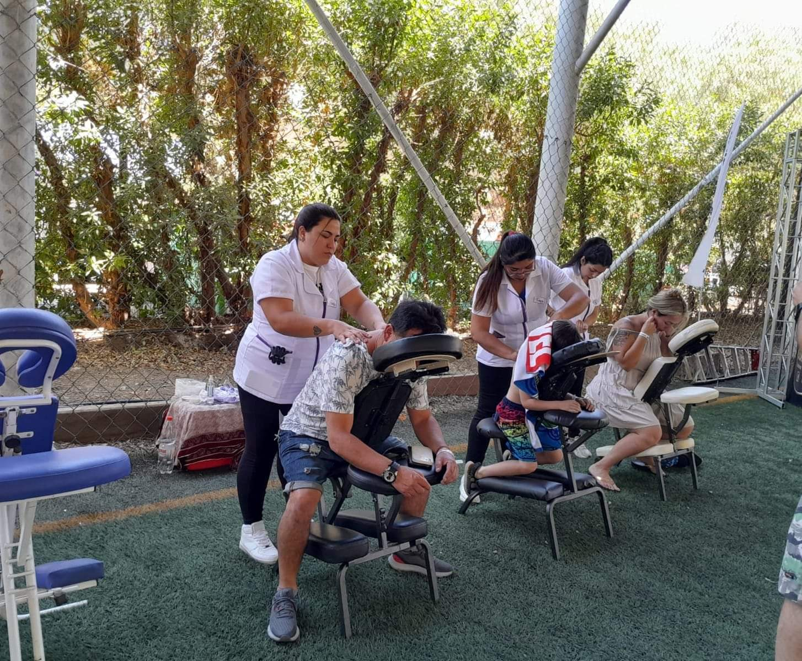

01
Masajes de relajación
Un espacio para desconectarte de la rutina, aliviar la sensación de tensión y dedicar tiempo al cuidado personal.
Consultar disponibilidadBienestar que se siente
Masajes de relajación y atención de bienestar para personas y equipos de trabajo. Un momento para bajar el ritmo y dedicarte al cuidado personal.

Estética Spa Sayuri
En Estética Spa Sayuri creemos en la importancia de hacer una pausa, atender las necesidades del cuerpo y reservar tiempo para el cuidado personal. Ofrecemos servicios de masaje y bienestar, además de alternativas para actividades y entornos laborales.
Conversemos sobre lo que necesitasCómo podemos ayudarte
Alternativas para regalarte una pausa o acercar el bienestar a tu equipo.
Un espacio para desconectarte de la rutina, aliviar la sensación de tensión y dedicar tiempo al cuidado personal.
Consultar disponibilidadLos espacios de pausa y relajación pueden complementar las iniciativas de bienestar y autocuidado en el trabajo.
Ver servicios a empresasConsulta por opciones de atención con masajes en ferias, jornadas y actividades para grupos o comunidades.
Solicitar informaciónLos servicios, su disponibilidad y las condiciones de atención se coordinan directamente. Consulta antes de reservar.
La importancia de una pausa
El masaje utiliza movimientos y técnicas manuales aplicadas al cuerpo. Según la técnica y las necesidades de cada persona, puede contribuir a la relajación y a la sensación de bienestar.
Puede ayudar a disminuir la sensación de tensión muscular y favorecer la relajación y la movilidad.
Un momento de descanso puede favorecer la calma y ayudar a desconectarse temporalmente de la rutina.
Las pausas de autocuidado pueden complementar otras medidas de prevención y bienestar laboral.
El masaje no sustituye la evaluación ni el tratamiento de profesionales de la salud. Si tienes una lesión, dolor persistente o una condición médica, consulta previamente con un profesional sanitario.


Servicios a empresas
Estética Spa Sayuri ofrece servicios de masaje para empresas y actividades laborales. Podemos conversar sobre las características de tu jornada o evento y revisar una alternativa acorde a lo que necesitas.
Nuestro trabajo
Un vistazo a nuestro equipo y a las experiencias de atención en distintos espacios.



Estamos para atenderte
Escríbenos para consultar por los servicios, disponibilidad o propuestas para empresas.
Escribir por WhatsAppRegistro de asistencia